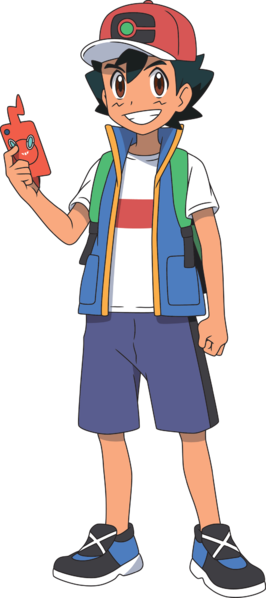

Ash Ketchum

Personal Information
Date of birth: 22nd May (year doesn't matter, he is eternally 10)
Email: Ash@billsPC.com
Address: House on the left, Pallet Town, Kanto
Championships
- Orange League Champion
- Manalo Conference Winner
League Finishes
- Lumiose Conference - Runner-Up
- Lily of the Valley Conference - Top 4
- Silver Conference - Top 8
- Ever Grande Conference - Top 8
- Vertress Conference - Top 8
- Indigo Plateau Conference - Top 16
Personal profile
According to Bulbapedia:
Ash is a Pokémon Trainer from Pallet Town whose goal is to become a Pokémon Master.
His starter Pokémon was a Pikachu that he received from Professor Oak.
He is the first ever Champion of the Alola region's Pokémon League.
Other Experience
Battle Frontier - Kanto
Defeated seven Frontier Brains offered the opportunity to become a Frontier Brain
Team Rocket Slayer - Worldwide!
It looks like they are blasting off again!
Outside interests
There are things that don't involve Pokemon?????